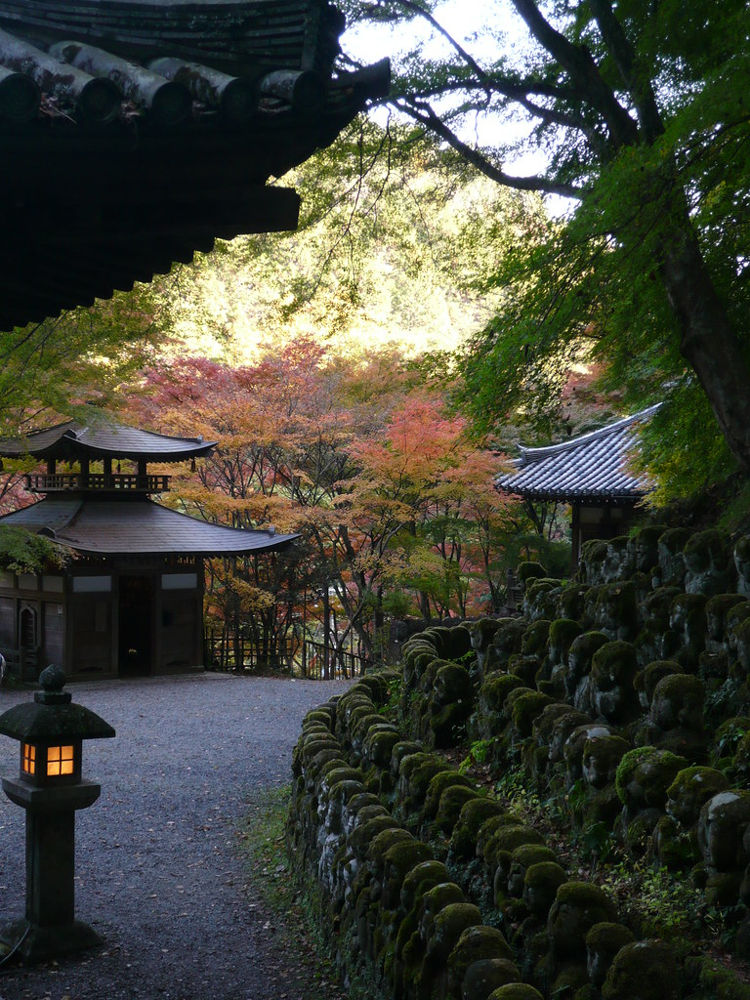
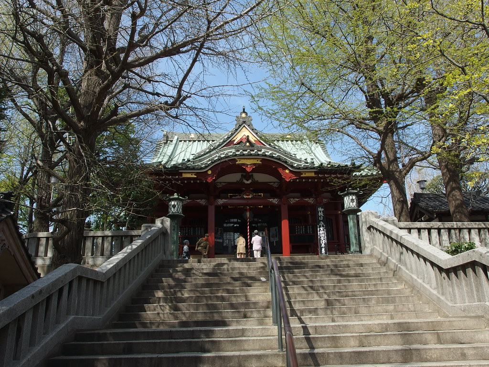

Geography in Japan
Tokyo is unusually flat compared to the rest of Japan so if your goal is to find high points to view the city from above then you’re out of luck. Although Tokyo is unusually flat there are still sites that could be deemed worthy to visit.
One such site is Atagoyama situated in the center of the city with an astonishingly “high '' 25 meters above sea level and it is Tokyo's highest mountain. The “mountain” is most famous for its stairway leading up to the mountain with its famous name “The Stone Stairway of Success”, it is said that anyone who climbs the stairs is destined to get a promotion.
Another famous site that is not famous for being a mountain is Matsuchiyama which is a temple situated in the north of Asakusa. Matsuchiyama is known for two things daiko and oil-bathing. Daiko which is a Japanese radish is seen as a symbol of harmony between married couples, matchmaking, and fertility and can be bought at the temple while oil-bathing is a ritual done to honor Kangi-Ten and bathing will result in the fulfillment of all the wishes of the believer.